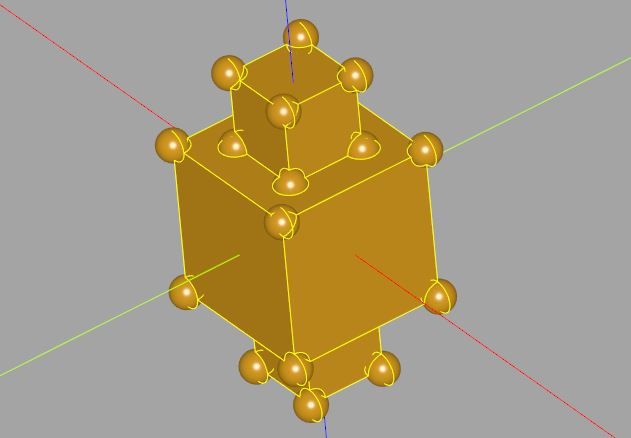
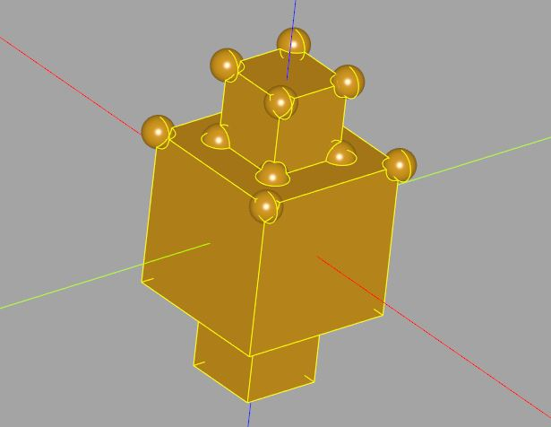

堆疊與選擇器
November 25, 2021Workplane 的方法操作後，都會傳回 Workplane 實例，因而可接續執行方法，形成方法鏈操作風格，CadQuery 也鼓勵你這麼做。
檢視堆疊
呼叫 Workplane 方法後若傳回新的 Workplane 實例，會記得它是由哪個 Workplane 操作而來，透過 parent 特性就可以取得，Workplane 有個 end 方法，可以指定取得第 n 個前代 Workplane，n 預設值為 1。
Workplane 是個容器，用來管理 2D/3D 等幾何資訊，例如，在〈Workplane 入門〉中，有個範例建立了一堆方塊，加入 circled_boxes 之中，它是個 Worlplane 實例，被加入的物件會被放入 objects 特性，如果你對 circled_boxes 進行 translate 等操作，那麼就是對 objects 特性中全部的物件進行操作。
在使用 Worlplane 進行方法鏈風格的操作時，相關的幾何物件也會以堆疊的方式放入 objects，例如：
import logging
import cadquery as cq
boxes = cq.Workplane().box(1, 1, 1)
logging.info(boxes.objects)
CQ-editor 雖然有 Debugger，不過還不是很完善，當然，你可以另外選擇別的編輯器，使用它的 Debugger 來除錯，不過這邊為了方便說明，使用了 logging 模組，這是為了能在 CQ-editor 的 Log viewer 檢視資訊，就上例而言，你會看到它顯示了：
INFO: root: [<cadquery.occ_impl.shapes.Solid object at 0x0000023938B33940>]
這表示 objects，也就是堆疊中有個方塊的實體物件，來加入另一個方塊：
import logging
import cadquery as cq
boxes = cq.Workplane().box(1, 1, 1).box(0.5, 0.5, 2)
logging.info(boxes.objects)
這時會看到：
INFO: root: [<cadquery.occ_impl.shapes.Compound object at 0x000002393A70CFA0>]
CadQuery 會看看鏈上每個 Workplane 的 objects，有無可合併的實體，也就是預設會將找到的實體聯集，合為一個 Compound 以便於管理，並放入 objects，也就是堆疊中有個 Compound，接著呼叫 vertices，這會取得堆疊中的 Compound，找出它的頂點：
import logging
import cadquery as cq
boxes = (cq.Workplane()
.box(1, 1, 1)
.box(0.5, 0.5, 2)
.vertices()
)
logging.info(boxes.objects)
這時你會看到，objects 中有了 24 個頂點：
INFO: root:
[<cadquery.occ_impl.shapes.Vertex object at 0x000002393CA40400>,
<cadquery.occ_impl.shapes.Vertex object at 0x000002393CA40B20>,
<cadquery.occ_impl.shapes.Vertex object at 0x000002393CA40970>,
<cadquery.occ_impl.shapes.Vertex object at 0x000002393CA40F10>,
...略]
接著若呼叫 sphere，就會使用堆疊中這 24 個頂點的位置來建立球：
import logging
import cadquery as cq
boxes = (cq.Workplane()
.box(1, 1, 1)
.box(0.5, 0.5, 2)
.vertices()
.sphere(0.1)
)
logging.info(boxes.objects)
新建立的球會與循著方法鏈，與方才看到 Workplane 的 Compound 聯集，構成新的 Compound：
INFO: root: [<cadquery.occ_impl.shapes.Compound object at 0x000002393CA40700>]
這時的模型會長這樣：

在〈Stack and Selector Methods〉中，可以看到 Workplane 有 all、size、vals 到 last 等方法，它們都是針對 objects 的簡便方法。
使用選擇器
在〈Stack and Selector Methods〉中也可以看到，vertices、faces 等方法，可以指定選擇器（Selector），例如，想取得 Z 座標大於 0 的頂點來建球，可以先取得 Z 座標大於 0 的面，再取得面的頂點：
import cadquery as cq
boxes = (cq.Workplane()
.box(1, 1, 1)
.box(0.5, 0.5, 2)
.faces('+Z') # 取得 Z 座標大於 0 的面
.vertices() # 取得面之頂點
.sphere(.1)
)
這會建立以下的模型：

使用字串指定選擇器的語法，可以在〈String Selectors Reference〉找到，透過點、線、面等的選取，在建立模型時，可以很大程度上免於一些複雜的數學計算。
大部份的情況下，CadQuery 的操作組合都蠻直覺的，到這篇文件為止談到的，入門 CadQuery 必要知道的基本觀念，應該足以應付設計上的需求，後續會來實作一些具體的題目，從中熟悉 CadQuery 的使用。
不過，CadQuery 背後其實還有待處理物件的的概念，如果你還想更深入掌握 CadQuery 這些觀念，可以參考〈CadQuery Concepts〉，特別是其中的〈An Introspective Example〉，這算是更接近底處實作的細節了，不過可以更瞭解 CadQuery 的運作方式，